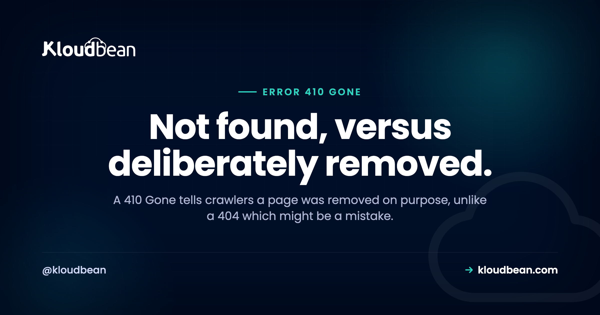

410 Gone: The Status Code That Says You Meant To Delete It

A 404 and a 410 both tell a visitor the page is not there, and to a human the difference is invisible. To a crawler it is the difference between "this might be a mistake, I will check again" and "the owner removed this on purpose, it is not coming back". That is the entire value of 410, and it is why it exists as a separate code rather than a footnote on 404. Most sites never send one, which is usually fine, and there are a handful of situations where it saves you real trouble: content you deliberately removed, listings that have expired, and URLs that were never supposed to be public.
410 Gone means the resource existed and has been permanently removed, deliberately, with no forwarding address. It differs from 404 Not Found, which only says the server could not find it and leaves open the possibility that it is a mistake or temporary. Search engines treat 410 as a stronger, more definite signal than 404, so it is the right code for content you intentionally deleted and never intend to restore. Use 301 instead if a replacement page exists.
404 versus 410 versus 301, decided in one table
| Situation | Code | Why |
|---|---|---|
| A replacement page exists | 301 | Send the visitor and the ranking somewhere useful |
| Removed on purpose, nothing replaces it | 410 | States the removal was intentional and permanent |
| You are not sure whether it should exist | 404 | Honest about uncertainty, and safely reversible |
| Typo or a broken internal link | 404 | Nothing was removed, something is wrong |
| Temporarily unavailable, coming back | 503 | Says come back later rather than give up |
The 301 row comes first deliberately, because it is the most common right answer and the one people skip past when they get interested in 410. If something replaced the page, redirect. A 410 on a URL that has a perfectly good successor throws away both the visitor and whatever authority that URL had earned. Our guide to 301 and 302 redirects covers that side properly, including why a wrong 301 is harder to undo than people expect.
What the two codes actually communicate
404 says: I looked, and I do not have it. That is all. It does not say whether the URL ever worked, whether it will work tomorrow, or whether someone fat-fingered a link. It is a statement about the present, and a crawler correctly reads it as possibly temporary.
410 says something stronger: this existed, I removed it, and I am telling you not to expect it back. It is a deliberate assertion about the past and the future, which is why it carries more weight.
The practical consequence is about how long a dead URL keeps getting requested and keeps appearing in results. A 404 leaves room for doubt, so a crawler is entitled to keep checking for a while in case you fix it. A 410 removes the doubt.
Being honest about the size of the effect, because this is where a lot of SEO writing overpromises: 410 is a clearer signal, not a magic deindexing button. Both codes eventually get a URL dropped from results. 410 tends to be treated as more definite, which can mean fewer repeat visits from crawlers to a URL you know is dead. If you are hoping for an instant removal, that is not what this is, and the tool built for urgent removals is your search console rather than a status code.
When a 410 is genuinely the right answer
Four situations where reaching for it is a real improvement rather than pedantry.
Content you deliberately deleted. An old campaign page, a discontinued product with no successor, a post you removed on purpose. You know it is not coming back, so say so.
Listings that expire by design. Job boards, event pages, classifieds, auctions. These have a natural end of life, and 410 describes that accurately. It is also the case where the volume is high enough for the crawler-efficiency difference to matter, since a large site can accumulate an enormous number of expired URLs.
URLs that should never have been public. A staging path that got indexed, an accidentally published draft, a test page someone crawled. A 410 says definitively that this is not part of the site.
Cleaning up after a compromise. If a site was hacked and had spam pages injected, those URLs may be indexed and getting traffic. Returning 410 for them states plainly that they are gone, which is more useful than a 404 that reads as maybe-a-mistake. Our guide to secure WordPress hosting covers the recovery order for the rest of that job.
And the case against bothering: a normal site with a handful of dead URLs gains almost nothing from converting 404s to 410s. This matters at volume, or when the distinction is genuinely meaningful. If you have twelve broken links, fix the links.
How to return one
Most stacks make this a one-liner. The important part is that the response body is optional but the status must be correct, because a page that says "this content was removed" while returning 200 communicates nothing at all to a crawler.
# nginx, a single removed URL
location = /old-campaign {
return 410;
}
# nginx, a whole retired section
location ^~ /events/2019/ {
return 410;
}# Apache
Redirect gone /old-campaign
# Or with mod_rewrite for a pattern
RewriteRule ^events/2019/ - [G,L]// Express
app.get("/old-campaign", (req, res) => res.sendStatus(410));
# Django
from django.http import HttpResponseGone
def old_campaign(request):
return HttpResponseGone()
# Laravel
abort(410);For WordPress, a plugin that manages redirects will usually offer 410 as an option alongside 301, which is the least fiddly route for a site with a long list of removed posts.
Then verify, because this is the step people skip and the failure is invisible in a browser:
curl -sI https://example.com/old-campaign | head -1
# HTTP/2 410Checking in a browser tells you very little here, since your error page may look identical either way. The status line is the only thing that matters, and it is one command.
The mistakes worth avoiding
Returning 410 when a replacement exists. The most costly error in this article. If you moved a page, redirect it. A 410 discards the value that URL had accumulated and sends visitors to a dead end.
Blanket-410ing after a migration. When a site move leaves thousands of old URLs, the temptation is to mark them all gone. Most of them probably have a corresponding new URL, and mapping them to 301s preserves both traffic and rankings. Reach for 410 only for the ones with genuinely no successor.
A soft 410, which is the same bug as a soft 404. A page that displays "sorry, this has been removed" and returns 200 is telling crawlers the URL is a perfectly good page whose content happens to be an apology. The status code is the message; the words on the page are not.
# The bug: it says gone, it returns fine
curl -sI https://example.com/removed-page | head -1
# HTTP/2 200 <- wrong, should be 410 or 404Using 410 for something temporary. If the page is coming back, 410 is a lie and 503 is the accurate code. Our guide to 503 responses covers what that signals.
Forgetting the internal links. A correct 410 does not fix a menu item or an old post still pointing at the removed URL. Removing content means removing the references to it, or you have deliberately built a dead end into your own navigation.
Does a 410 hurt your SEO?
Not in itself, and this worry is what brings a lot of people to this page.
Removing a page removes whatever that page ranked for, which is the actual loss, and it happens whether you serve a 404 or a 410. The status code does not add a penalty. What it does is tell search engines the removal was intentional, which is if anything cleaner than leaving ambiguity.
What can genuinely hurt is removing pages that were earning traffic without checking first, or returning gone-style codes for URLs that should still work. Both of those are content decisions rather than status code decisions. Before you delete something, look at whether anything links to it and whether it brings in traffic, and if it does, a 301 to the nearest useful page is almost always the better move.
A large number of 4xx responses in your logs is worth understanding rather than fearing. Expired listings returning 410 are a healthy site working as designed. Hundreds of 404s from your own internal links are a maintenance problem. Same general shape in a report, completely different meanings.
What the box needs to provide
This is a configuration question, so the honest answer is that any host lets you do it and the work is in your web server config or your application.
What matters practically is having somewhere to test a change before it hits live traffic, because a misplaced location block or an over-broad rewrite pattern can take out more URLs than you intended, and status-code mistakes are invisible in a browser. Kloudbean provides staging for WordPress and Laravel applications, automatic backups so a bad configuration change is reversible, and managed servers across seven clouds with the web server maintained for you. Free SSL is issued and renewed, and servers, applications, and databases sit in one dashboard.
The genuinely useful adjacent capability is your access log, since that is where you find out which removed URLs are still being requested and by whom. A 410 you added six months ago that is still getting steady traffic usually means something out there still links to it, and that is worth knowing.

More on 410 Gone
For the redirect side of this decision, 301 versus 302 and redirect loops. For temporary unavailability, 503 after deploying. For the neighbouring 4xx codes, 403 Forbidden and 405 Method Not Allowed. On caching implications of removed URLs, 304 Not Modified. And on cleaning up after a compromise, secure WordPress hosting.
Deploys that tell you what broke.
Build logs stream live in the console, deployment history keeps what happened, and the logs viewer separates app errors from web requests, so a failed start is a five-minute read rather than a guessing game.
- ✓ Live build logs
- ✓ Deployment history
- ✓ Logs viewer
- ✓ Managed process restarts
- ✓ Automatic backups
- ✓ Git deploy
Plans from $8/mo · Free migration assistance · Free trial
FAQ
What is a 410 Gone error?
It means the resource existed and has been permanently removed on purpose, with no replacement. Unlike a 404, which only reports that the server could not find something, a 410 asserts that the removal was intentional and that the URL is not expected to work again.
What is the difference between 404 and 410?
404 says the server could not find the resource, leaving open whether that is a mistake or temporary. 410 says it existed and was deliberately removed. Search engines treat 410 as the more definite signal, so a crawler has less reason to keep checking back on a URL you have marked gone.
Is 410 better than 404 for SEO?
It is clearer, not magic. Both eventually lead to a URL being dropped from results, and 410 states your intent unambiguously, which can reduce repeat crawling of dead URLs. The benefit is most noticeable at volume, such as a job board with many expired listings. For a site with a few dead pages, it makes very little practical difference.
When should I use 301 instead of 410?
Whenever a replacement page exists. A 301 sends visitors somewhere useful and passes on the value that URL had built up, while a 410 discards both. This is the most expensive mistake in this area, and it happens most often during migrations when it is tempting to mark every old URL gone rather than mapping them.
How do I return a 410 status code?
In nginx, return 410; inside a location block. In Apache, Redirect gone /path or a rewrite rule with the [G] flag. In application code, res.sendStatus(410) in Express, HttpResponseGone in Django, or abort(410) in Laravel. Then verify with curl -sI, because a browser will not show you which status you actually sent.
Does a 410 hurt my rankings?
The status code does not add a penalty. Removing a page loses whatever that page ranked for, and that happens with a 404 too. The real risk is deleting pages that were earning traffic without checking first, or returning gone codes for URLs that should still work. Check links and traffic before removing anything, and redirect if a successor exists.
What is a soft 410?
A page that tells visitors the content was removed while returning a 200 status. It is the same bug as a soft 404: the words on the page are not the message, the status line is, so crawlers read it as a normal working page whose content happens to be an apology. Return the real status code.
Should I use 410 for expired job listings or events?
Yes, this is one of the clearest uses. Those URLs have a genuine end of life with no replacement, and the volume on a large listings site is exactly where telling crawlers not to keep checking has a measurable effect. If a listing has a natural successor, such as a reposted role, redirect to it instead.